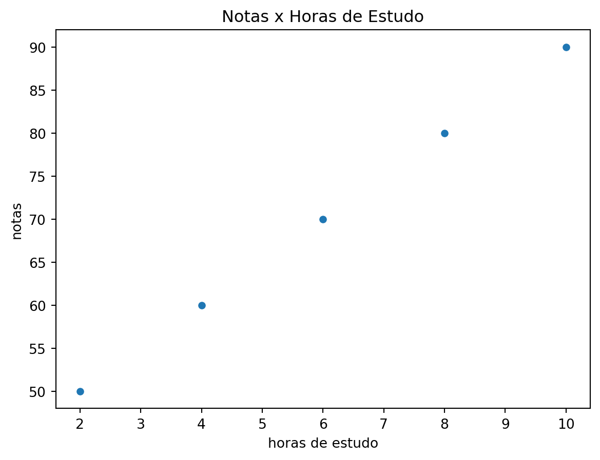

import numpy as np
import pandas as pdMinicurso Ultra Rápido de Pandas
O objetivo deste minicurso é apresentar os principais conceitos da biblioteca Pandas, que é uma das mais utilizadas para análise de dados em Python.
Instalação
Para instalar o Pandas, basta executar o comando abaixo no terminal: pip install pandas
Importando o Pandas
Para importar o Pandas e numpy, basta executar o comando abaixo:
Criando um data frame com pandas e numpy
Para criar um data frame com pandas e numpy, basta executar o comando abaixo:
Clique para ver o código
# criando um array com numpy notas vs horas de estudo
array = np.array([[2, 50], [4, 60], [6, 70], [8, 80], [10, 90]])
# cria as variáveis para o data frame
variaveis = ['horas de estudo', 'notas']
# cria o data frame
data_frame = pd.DataFrame(array, columns=variaveis)
# imprime o data frame
print(data_frame)
# plota o gráfico
data_frame.plot(x='horas de estudo', y='notas', kind='scatter',
title='Notas x Horas de Estudo')
# exporta pro excel com a biblioteca openpyxl
# data_frame.to_excel('data_frame.xlsx', sheet_name='data_frame') horas de estudo notas
0 2 50
1 4 60
2 6 70
3 8 80
4 10 90<Axes: title={'center': 'Notas x Horas de Estudo'}, xlabel='horas de estudo', ylabel='notas'>
Adicionar e manipular variáveis no data frame
Clique para ver o código
# adiciona uma nova coluna ao data frame
data_frame['notas2'] = data_frame['notas']/2
print(data_frame) horas de estudo notas notas2
0 2 50 25.0
1 4 60 30.0
2 6 70 35.0
3 8 80 40.0
4 10 90 45.0Salvando uma coluna do data frame em uma variável
Clique para ver o código
notas = data_frame['notas']
print(notas)0 50
1 60
2 70
3 80
4 90
Name: notas, dtype: int32Selecionar a segunda e a terceira variavel do data frame com o índice das variáveis
Clique para ver o código
data_frame2 = data_frame.iloc[:, 1:3]
print(data_frame2) notas notas2
0 50 25.0
1 60 30.0
2 70 35.0
3 80 40.0
4 90 45.0Selecionar a segunda e a terceira variavel do data frame com o nome das variáveis
Clique para ver o código
data_frame2 = data_frame[['notas', 'notas2']]
print(data_frame2) notas notas2
0 50 25.0
1 60 30.0
2 70 35.0
3 80 40.0
4 90 45.0Selecionar as linhas do data frame com o índice das linhas
Clique para ver o código
# seleciona as linhas 1 e 2 do data frame
data_frame2 = data_frame.iloc[1:3, :]
print(data_frame2) horas de estudo notas notas2
1 4 60 30.0
2 6 70 35.0Filtranado o data frame com base em uma condição
Clique para ver o código
data_frame2 = data_frame[data_frame['notas'] > 70]
print(data_frame2) horas de estudo notas notas2
3 8 80 40.0
4 10 90 45.0Filtranado o data frame com base em duas condições com o operador &
Clique para ver o código
data_frame2 = data_frame[(data_frame['notas'] > 70) &
(data_frame['horas de estudo'] > 8)]
print(data_frame2) horas de estudo notas notas2
4 10 90 45.0Importando um arquivo csv para o data frame
Clique para ver o código
data_frame = pd.read_csv('data_frame.csv')